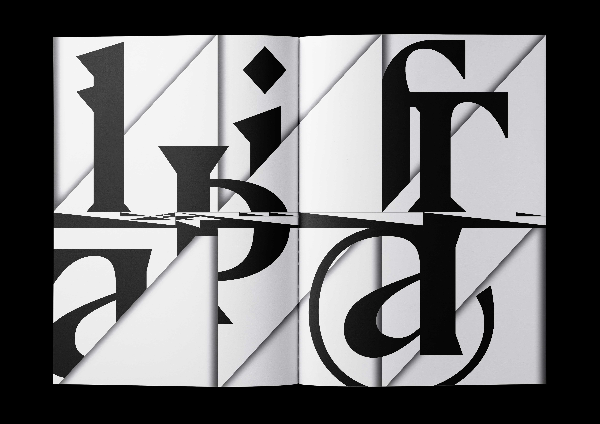
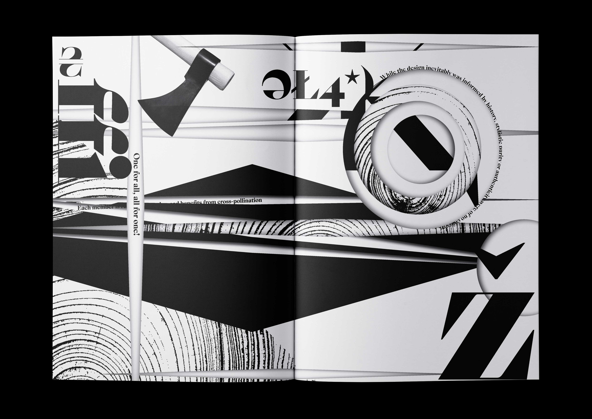

ROBIN—Thank you Robin for spending as little time as possible for the interview to bring out the concept of rush, hurriedness and urgency. Adding to that was the chat on Messenger, because verbal speech was already difficult to organize in real time. A varition of this time-lacking interaction.
1.

2.

3.

4.
5.

In Conversation On Top of So-called Time
How is time spent? What does it mean to be in a hurry? What is online time? I made several interviews with Robin through different experimentation on the concept of limited time. The book was designed to reflect on this aspect, in which Robin was forced to maneuver through whatever time he had left to finish his speech. Sometimes he exceeded the time greedily.
1. Inside spread of 'Sharp Specimens', 2019.
1.
2.

3.
4.
5.

Sharp Specimens
A mini-catalogue of 10 selective typefaces that most resemble sharp objects. Each typeface corresponds with the aesthetic of the object it pairs with.
As colors in gardens. Flowers in masses are mighty strong color, and if not used with a great deal of caution are very destructive to pleasure in gardening. But there are some flowers (inventions of men, i.e. florists) which are bad color all together, and ... to show that even flowers can be thoroughly ugly.
—William Morris
1.
2.

Ornamental Types
A book on ornamental and display typefaces—how these typefaces are connected to, for example, the arts and crafts ideals and other means of visual/textual communication.